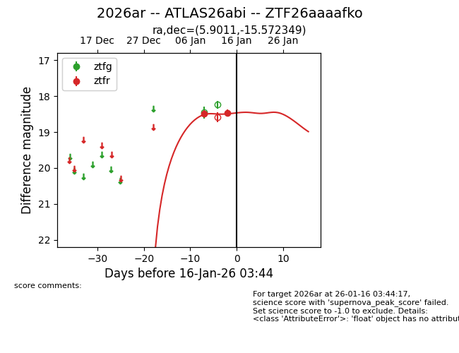
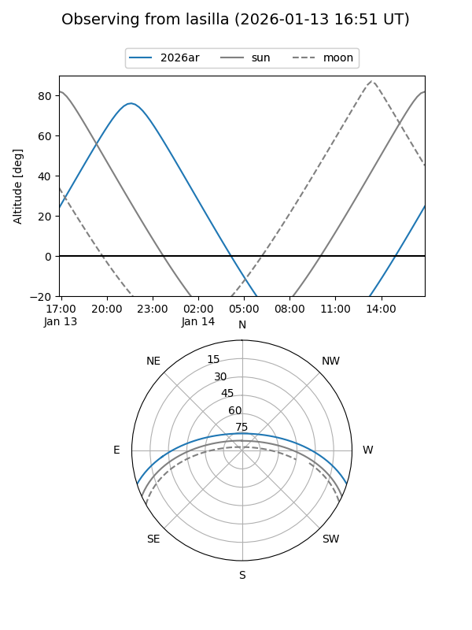
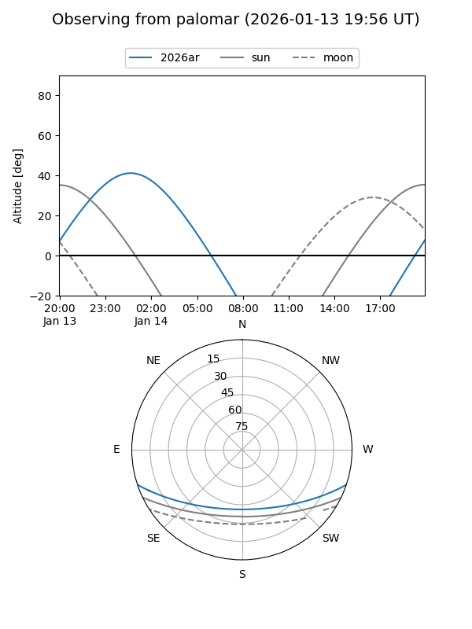
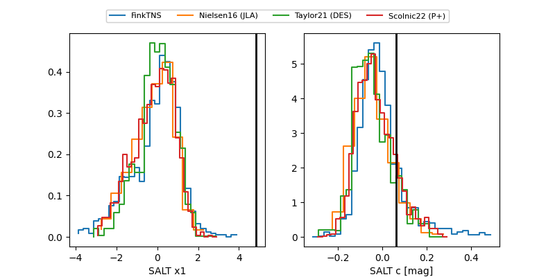

2026ar
Target 2026ar at 2026-01-14 03:05
Aliases and brokers:
FINK: link
Lasair: link
ALeRCE: link
TNS: link
YSE: link
alt names
ZTF26aaaafko (ztf,fink_ztf)
2026ar (tns,yse)
ATLAS26abi (atlas)
Coordinates:
equatorial (ra, dec) = 5.9011,-15.57235
equatorial (HMS+DMS) = 00:23:36.26,-15:34:20.46
galactic (l, b) = (92.3010,-76.75895)
Flags:
Photometry:
last ztfr=18.47
2 ztfr detections
Lightcurve

Visibility


Additional plots
